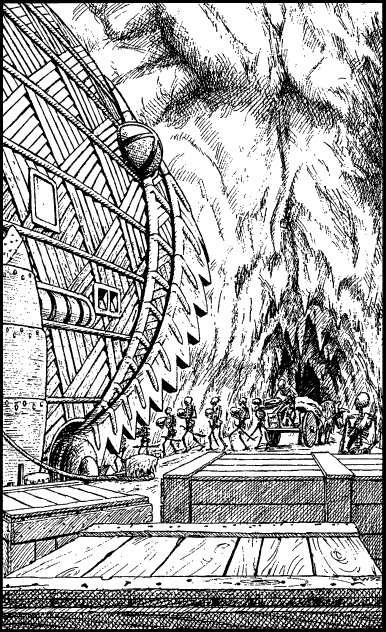

207
Less than fifty yards away you see a shaggy, grey-furred beast of burden which is harnessed to a wooden wagon. A troop of undead soldiers is unloading shiny metallic containers from the back of this wagon which they then carry, cradled in their bony arms, into the open mouth of the submarine.
Stealthily, you make your way closer to the wagon and await the chance to climb aboard as soon as the final container has been off-loaded. At last the opportunity arrives; you leap aboard and hide yourself from sight beneath a greasy, foul-smelling tarpaulin.
After a few minutes you feel a jolt as the wagon moves off. Through a crack in its ancient wooden planks, you watch with trepidation as the wagon trundles along a causeway towards the distant tunnel entrance. It enters the tunnel, unchallenged by the skeletal warriors who stand guard here, and ascends a gentle gradient to another ice-walled cavern. Several passages connect here from all directions, like the spokes of a giant wheel converging at the hub.

An undead Drakkarim soldier steps forward, takes hold of the shaggy beast’s harness, and leads the wagon towards a stockpile of metallic containers. Clearly he intends to load these onto the wagon for transportation back to the submarine. Fearing discovery, you leap from the rear of the moving wagon and hide yourself among a stack of empty wooden crates. From here you observe two possible ways by which you could leave this busy cavern: by an unguarded staircase in the north wall, or through an open archway in the east wall.
If you wish to leave this cavern by the staircase, turn to 141.
If you choose to leave through the open archway, turn to 7.